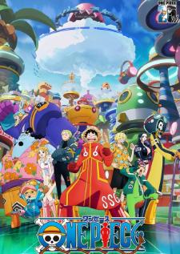
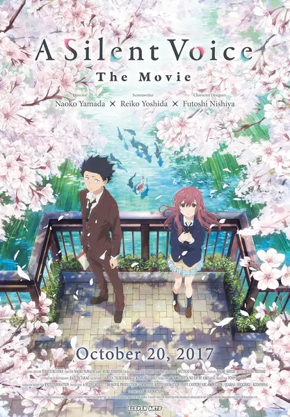

ชื่อเล่น: ปอนด์
ยินดีต้อนรับสู่เว็บไซต์ผม ขอให้คนอ่านมีแฟนเดอะ อิอิ

เรื่องนี้คือที่สุดในใจเพราะ...อยากตามหาวันพีชไปกับลูฟี่
เรื่องนี้คือที่สุดในใจเพราะ...ชอบสีสันเนื่อเรื่องยาว
เรื่องนี้คือที่สุดในใจเพราะ...พระเอกเก่งอดทนรอดูตอนจบ

เรื่องนี้คือที่สุดในใจเพราะ...เป็นรักที่สื่อสารไม่ได้เศร้ามากกT-T
เรื่องนี้คือที่สุดในใจเพราะ...ความรักกันในวัยเด็กต้องมาปกป้องกัน